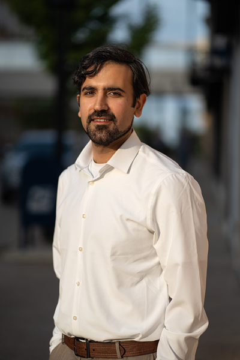
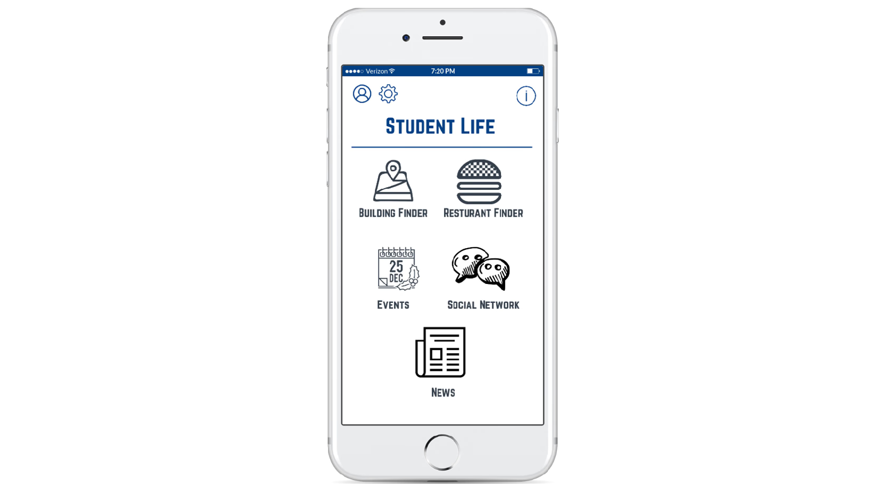
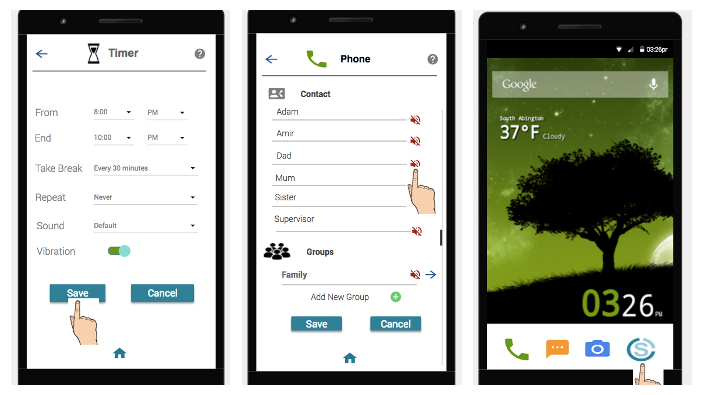
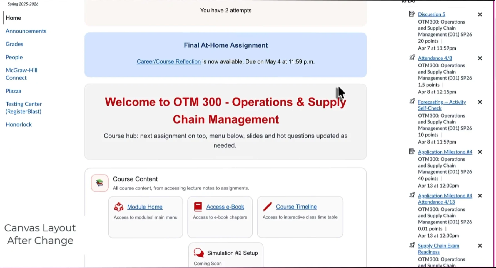
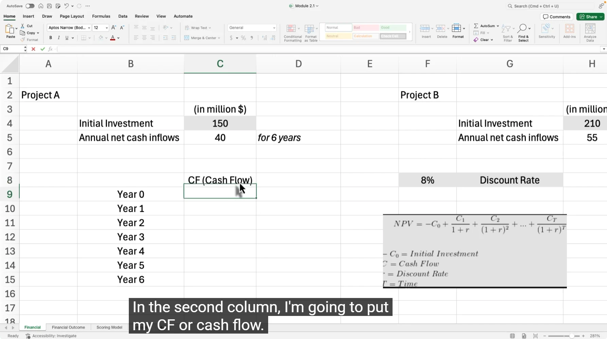
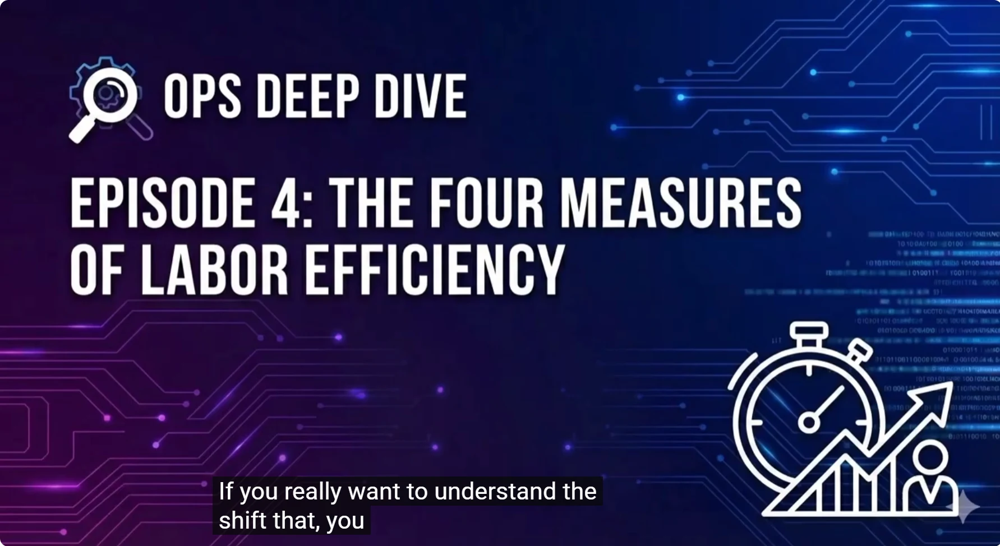
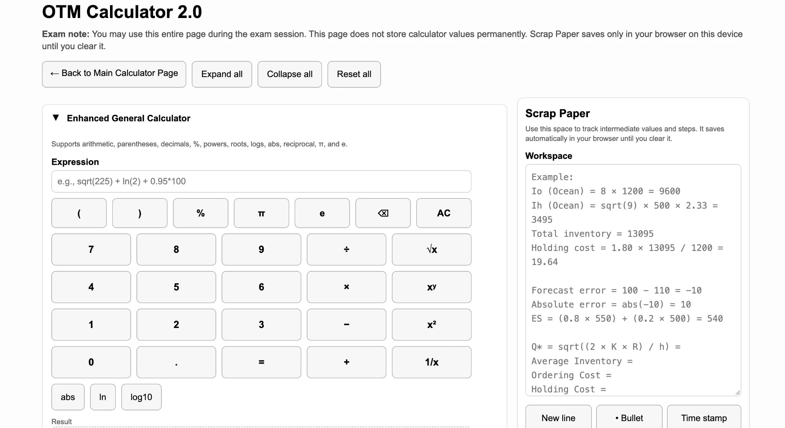

Ashes in the Data
An interactive investigation that turns Copilot use into hands-on practice, with decisions, feedback, and opportunities to verify AI-generated answers.

Explore the experiences I’ve built and the analysis, collaboration, and delivery decisions behind them.
An interactive investigation that turns Copilot use into hands-on practice, with decisions, feedback, and opportunities to verify AI-generated answers.
A mobile experience that uses an airport story, simulated messages, reflection, and graduated practice to explore the pause between a trigger and a response.

A cross-platform mobile app and field study examining how defaults and perceived knowledge shape user choices. Led the work through development and evaluation.

A collaborative mobile design project connecting user research, prioritized requirements, interaction design, and testing to help students manage distractions.

Learning hub
Video & practice
Audio learning
Interactive calculatorsBuilt an integrated learning architecture connecting an interactive Canvas hub, practical business tools, instructional video, and AI-assisted audio. Designed the components to support navigation, practice, and multiple ways to learn.
Coordinate 6–15 contributors across 4–7 concurrent course projects. Connect instructional review, content and media production, editorial handoffs, and quality checks, with schedules and revision tracking in Asana.
At DavidsonX, I developed Advanced Excel and Copilot with Excel courses for edX, coordinating curriculum, content, exercises, assessments, and interactive activities with the hub team through iterative production cycles. Both courses are scheduled for November 2026.
Developed a Mario-themed digital-safety activity for a Girl Scouts workshop, introducing digital footprints, connected devices, and location sharing through a story and maze challenge.
I adapt language, examples, pace, and format to the people using the experience.
Girl Scouts workshop participants exploring digital safety through stories and playful activities.
Business and technology learners working through concepts, software labs, simulations, and applied projects.
Learners bringing workplace experience to business, healthcare, finance, and operations topics, often alongside work and family commitments.
International students preparing for study in North America, learners with different levels of technical confidence, and audiences connecting new concepts with their own experience.
Writing runs through my work: course content, exercises, instructional scripts, process guidance, and peer-reviewed publications. I move between research detail and language that helps people understand what to do next.
At the University of British Columbia, my work on user decisions combined app development, evaluation, and publication. At Wisconsin, I wrote about technology adoption and healthcare risk while developing courses in business and technology.
At DavidsonX, that work takes a different form: explaining Excel and Copilot through learner-facing content, exercises, and interactive activities. At Magic EdTech, it includes revising course materials and aligning instructions, learning outcomes, and assessments.
Writing assessment · 1–1.5 minute instructional video · Narration and on-screen direction.
Here’s how to import your catalog into Walmart Marketplace, including what won’t carry over automatically.
On screenTitle card: Import Your Catalog. Use large, high-contrast text in a mobile-safe central area. Transition to Seller Center.
You’ll need admin access to Seller Center. Go to Catalog and select Add items.
On screenScreen recording: Establish the full Catalog page, then move in on Add items. Use a labeled focus box rather than color alone.
In the Import items section, select Import items, then Get Started, and connect your external marketplace account. Confirm the import when you’re ready.
On screenScreen recording: Show one action at a time: Import items → Get Started → Connect account → Confirm. Keep credentials and private information hidden.
Versori, Walmart’s approved Solution Partner, handles the connection. It brings over content you own, including titles and descriptions. Images don’t come over, so plan to add those yourself in Seller Center.
On screenInfographic: A product card moves from External marketplace → Versori → Walmart Marketplace. The title and description populate while the image area stays empty. Label: Seller adds images.
Once the import is complete, your items are saved as drafts. Select View my catalog, then Review items.
On screenScreen recording: Highlight the imported-item count, followed by View my catalog and Review items. Add a visible Draft label to the product card.
Review each draft. Check the title and description, add your images, and complete every required section.
On screenScreen recording with infographic overlay: Move through one draft from top to bottom. Build the checklist: Verify title · Verify description · Add images · Complete required sections.
Check the fulfillment method. Eligible items default to Walmart Fulfillment Services, or WFS for short. You can switch to Seller Fulfilled at any time, but switching back means re-entering WFS details such as item dimensions.
On screenScreen recording: Show the control changing from Walmart Fulfilled → Seller Fulfilled. Callout: WFS details are removed when you switch. Show dimensions fading from the product card.
When everything looks right, submit your items. Track their status from the Activity Feed. Updates may take up to 24 hours, or longer if there’s an error to resolve.
On screenScreen recording: Show the submission action, followed by the relevant Activity Feed row. Add the progress visual: Submitted → Processing → Updated. Label: May take up to 24 hours.
Still have questions? The Import your catalog guide’s FAQs cover costs, data access, repeat imports, errors, and fulfillment.
On screenEnd screen: Show the Import your catalog guide and highlight Frequently asked questions. Display: Learn more in Marketplace Learn. Hold briefly, then fade out.
Week 2 teaching script excerpt · Goal Seek and financial modeling.
Goal Seek does more than save time. It changes the direction of the question.
Most spreadsheet work moves one way. You enter the inputs, and Excel calculates the output. Goal Seek reverses that process. You start with the output you need, and Excel finds the input required to produce it.
That may sound like a small difference. It is not.
Suppose a borrower says they cannot spend more than $1,500 a month. Without Goal Seek, you might calculate the payment on a loan and then adjust the amount repeatedly until it fits.
With Goal Seek, you start with the borrower’s limit. You tell Excel the payment must be $1,500, and Excel tells you the loan amount that makes that possible.
The question changes from, “What will this loan cost?” to, “What loan can this person afford?”
Week 4 teaching script excerpt · A decision framework for Excel and Copilot.
The decision framework in Topic 1 is five questions. Do I know exactly what to calculate? Does the answer need to update automatically? Do I need to explore multiple dimensions interactively? Will this be presented to someone else? Is the task fundamentally about language? Each question points to a specific tool. The framework does not tell you to distrust Copilot. It tells you when Copilot is the right choice and when it is not, and those are different moments in the same analysis session.
Co-authored research organizing adoption around applicability, availability, acceptability, and adaptability. My Copilot course development puts a related interest into practice: helping people use AI and verify its output.
Read publicationCo-authored work on knowledge, interface defaults, and user choices, connected to the mobile product case study.
View publicationResearch translating healthcare breach information into a framework for prioritizing data protection.
View publicationPublications appear under Amir Fard Bahreini.
Full publication list on Google ScholarI bring business analysis, technology insight, and clear communication to work that moves from understanding a need to developing and delivering a solution. Explore the capabilities and experience behind that approach.
Additional study: London School of Economics summer program. Currently studying Technology & Applied Composition at the San Francisco Conservatory of Music.
Certifications & professional learning: CIPP/US · PSM I · PSPO I · Google UX Design · Harvard Business School, Working with AI.
Learning across business, technology, analytics, and operations, delivered through instructor-led, online, and blended formats.
Includes course development, sole instruction, guest lectures, and teaching assistance.
Selected comments from university course evaluations. Choose a theme to explore; comments rotate every eight seconds.
For projects, collaborations, or a conversation about learning and technology.
fard.bahreini.amir@gmail.com